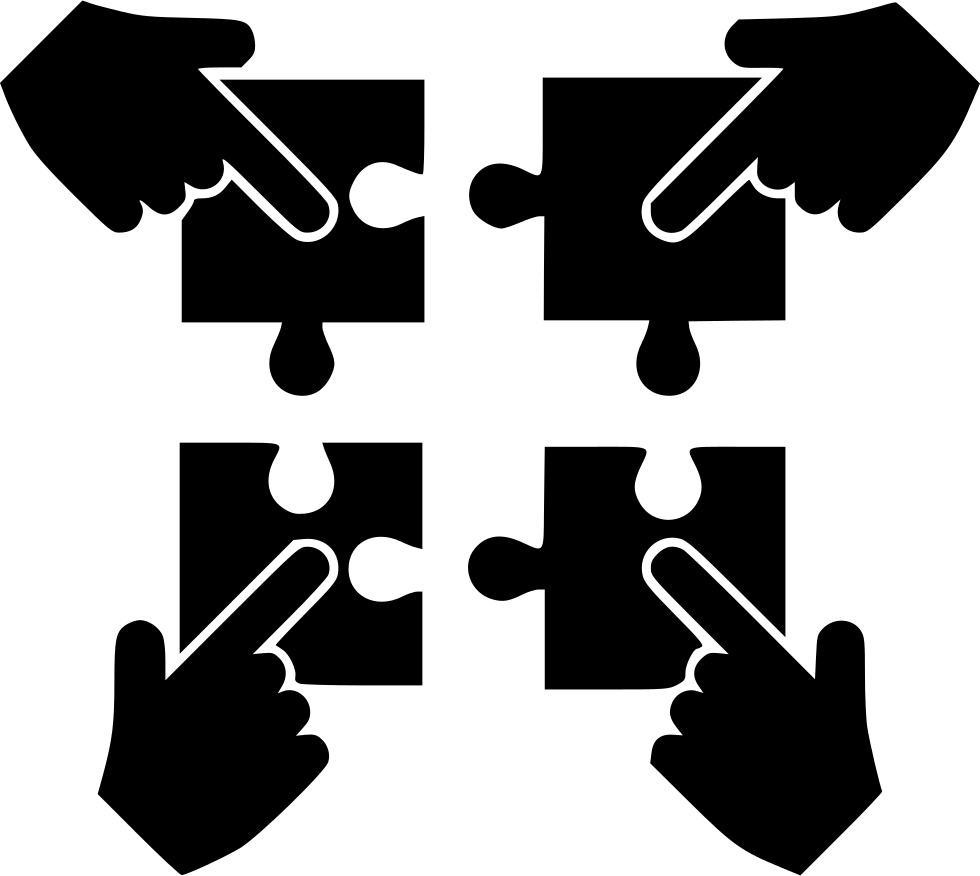

Обо мне
Привет.
Меня зовут Кашлакова Юлия, и я амбициозный человек, который ищет работу, связанную с версткой.
Я люблю чтобы информация на сайте была легко доступна и понятна.
Чтобы работать усердно и с пользой, мне абсолютно необходимы инъекции кофеина.
Я люблю читать книги, особую любовь испытываю к ужасам, занимаюсь спортом.
Что я могу сделать

Изучать новые технологии,
языки программирования и т.д.

Воплащать Ваши идеи

Быть на связи 24 на 7
